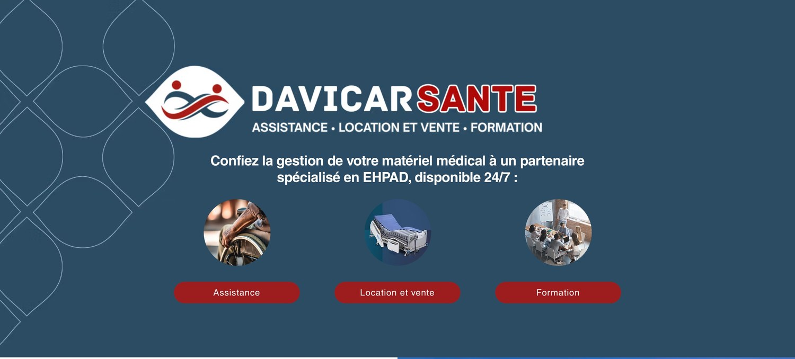
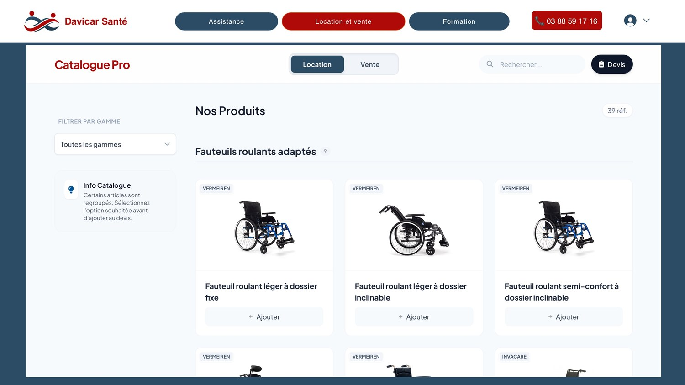
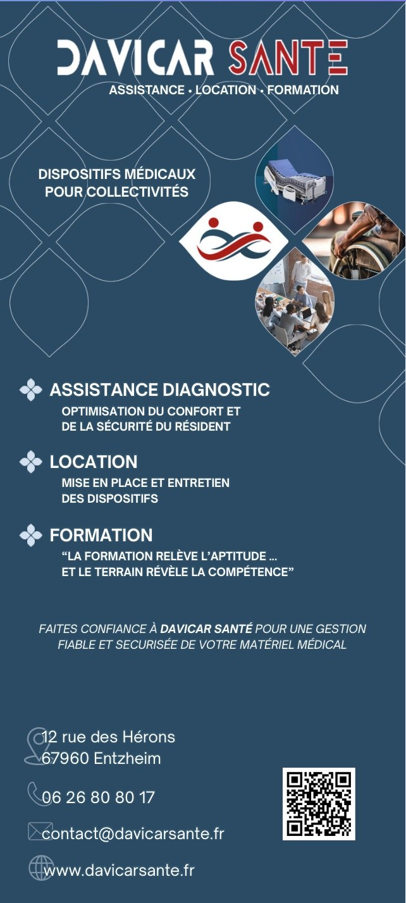

Marketing digital & web
Traduire une stratégie commerciale en une interface en ligne performante (Wix), de l'arborescence à la mise en production.
Compétence · Les coulisses
« You don't get to 500 million friends without making a few ads. »
Le marketing regroupe l'ensemble des actions visant à analyser un marché, à comprendre les besoins d'une cible et à concevoir l'offre, le message et les canaux qui permettront d'y répondre. De l'étude à la diffusion, il relie la stratégie commerciale à sa traduction concrète : un site, un support, une expérience — pensés pour attirer, convaincre et fidéliser.
Compétences développées
Au générique de cette compétence — ce que ces réalisations m'ont appris
Traduire une stratégie commerciale en une interface en ligne performante (Wix), de l'arborescence à la mise en production.
Auto-formation au référencement pour générer du trafic qualifié et transformer le site en canal de vente.
Décliner une identité de marque avec cohérence, du digital au print (kakémono événementiel).
Synthétiser et prioriser un message pour qu'il soit lisible au premier regard, en ligne comme sur le terrain.
En charge de développer la notoriété de l'entreprise, j'ai mené un diagnostic de notre présence en ligne. Réaliser que Davicar ne possédait pas encore de site web est devenu le point de départ de ma mission de développement numérique.
Pour relever ce défi, j'ai pris en charge la conception intégrale du site via Wix. Afin d'offrir une expérience optimale, j'y ai développé des fonctionnalités clés, notamment un catalogue interactif et un espace membre dédié. Soucieux de livrer un projet abouti, j'ai géré la conformité en rédigeant les mentions légales et je me suis auto-formé au SEO pour garantir notre visibilité sur les moteurs de recherche. Résultat : le site est devenu un véritable canal de vente, régulièrement utilisé par nos clients pour commander leurs équipements.
Ce projet a été un véritable accélérateur d'apprentissage. Novice en marketing digital et en développement web au lancement de la mission, j'ai profité de ce défi pour monter en expertise. Je suis désormais capable de traduire une stratégie commerciale en une interface web performante : de l'optimisation de l'expérience utilisateur (navigation fluide) au respect du cadre légal, tout en garantissant l'acquisition de trafic via le SEO.


Pour soutenir notre développement commercial sur le terrain, j'ai été chargé de concevoir un support de communication visuelle clé : un kakémono. L'enjeu principal était d'optimiser notre visibilité lors d'événements physiques et de présenter nos services de manière claire et accrocheuse.
J'ai abordé cette conception avec une logique commerciale et visuelle. Dans un premier temps, je me suis approprié la charte graphique existante pour garantir une parfaite continuité avec nos autres supports. J'ai ensuite sélectionné les informations stratégiques (services clés, coordonnées, relais vers le site web). Enfin, j'ai travaillé l'agencement et la hiérarchie visuelle pour que le message principal soit lisible et compréhensible au premier regard par les passants.
Ce projet m'a permis d'affiner mon œil graphique et de transposer ma logique commerciale sur un support physique (Print). En m'assurant de la déclinaison parfaite de la charte graphique, j'ai consolidé ma capacité à maintenir une forte cohérence de marque. J'ai surtout appris à synthétiser et hiérarchiser l'information pour l'adapter aux contraintes spécifiques de l'événementiel.
